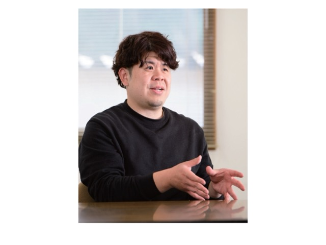
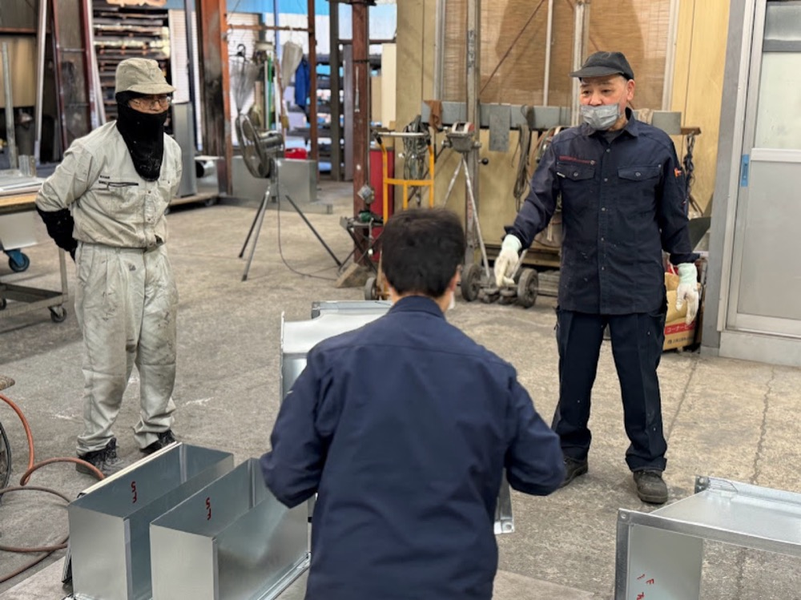
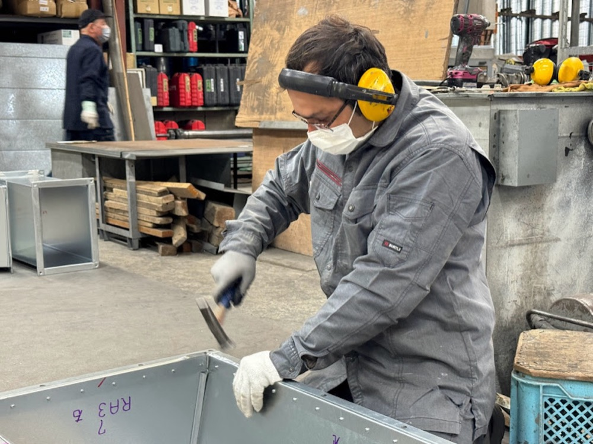
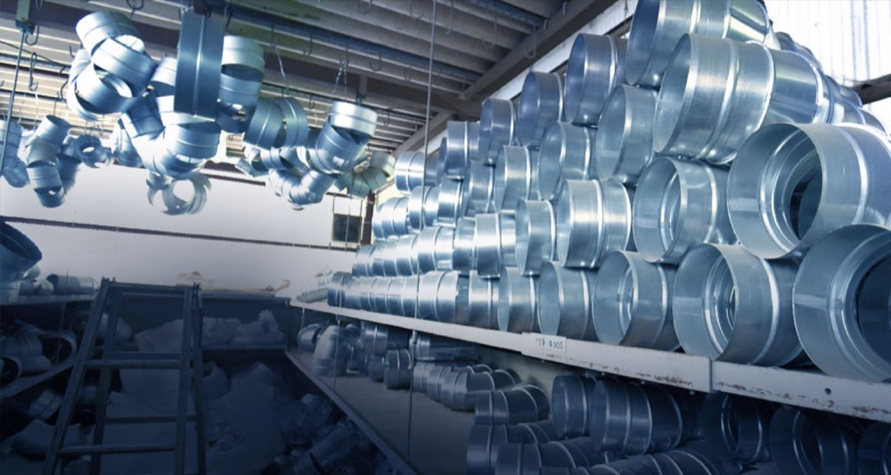
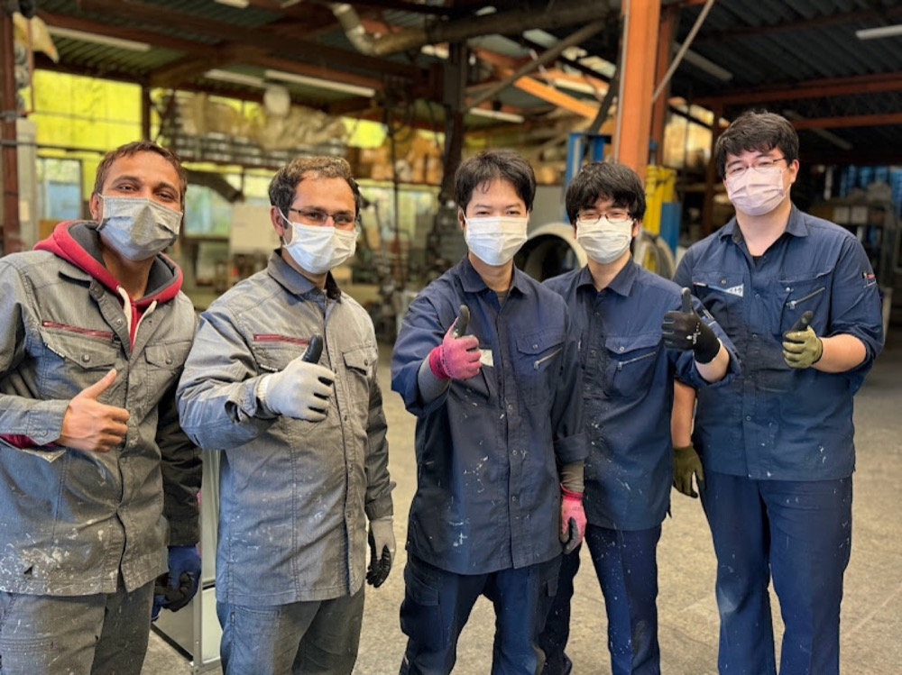

建物を呼吸させる会社
浦田 裕晶
浦田空調工業株式会社 専務取締役
青山学院大学卒業後、不動産関係の会社に入社。その後2022年に家業である浦田空調工業へ入社する。外部視点を武器にIT化や働き方改革を進め、祖父の時代から築きあげてきた「信頼の歴史」を継承すべく、空調ダクト業界を刷新する専務取締役として尽力している。
企業サイトを見るTRACK 01
建物を呼吸させる会社

人間の呼気は、目に見えないからこそ、その質を保つ仕組みが欠かせない。外から新鮮な空気を運び入れ、建物のなかの汚れた空気を静かに排出することで、私たちの健康を支えている。空調ダクトという世界は、だからこそ実に奥深い。
浦田空調工業株式会社。千葉県千葉市に根を下ろし、千葉県内を中心とした数々の商業施設や工場、オフィスビルなど、人が行き交う空間の心地よさを陰で支える企業である。その主な事業は空調ダクトの製造と取り付けで、1枚の鉄板から作り上げる製造から、現場での設置までを一貫して行うのが特徴だ。1972年の創業という老舗で、バブルの崩壊、リーマンショック、そして自然災害など幾多の試練を乗り越え、千葉県での存在感を揺るぎないものにしている。
工場の奥へ進むほど、金属のきらめきと職人の熱気に満ちている浦田空調工業。そこで中心的な役割を担うのが、専務取締役であり、次の世代の経営を託されつつある四代目、浦田裕晶氏だ。彼の瞳には、先人たちが積み重ねてきた「信頼」という重厚な財産を、確実に未来へ引き渡す、その覚悟がうかがえる。
TRACK 02
「商売は信頼第一」

浦田裕晶は幼少期から剣道に明け暮れ、高校までの12年間を竹刀に捧げた。勝てない日々が続いていた彼はあるとき、悔しさのなかに「努力はどう実行するかを考えた者だけが報われる」という真実に気づき、そこで“考えること”の大切さを自ら骨の髄まで叩き込んだという。
大学卒業後、不動産関係の会社に入社。人材系のビジネスの現場にも身を置き、つねに“相手が何を求めているか”を意識する日々だった。そしてあるとき、父から二択を突きつけられた。「会社を潰すか、それとも継ぐか」。浦田空調工業を畳んで祖父から築いてきた信頼の歴史を終わらせるのか。それとも戻ってまったくの異業種であるこの家業に身を投じ、100年企業へと育て上げる礎になるのか。どちらを選んでも楽ではなかったが、答えは意外にも早く出た。なぜなら選択に迫られたとき、祖父の「商売は信頼第一」という言葉が、脳裏で何度もリフレインしたからだ。過去に、自分に向けてくれた笑顔を失いたくない…その思いで、彼は意を決し、浦田空調工業の専務取締役として新たな船出を始めたのである。


TRACK 03
考える力を持つ職人集団へ
浦田がまず取り組んだのは“人が集まりたくなる会社”への進化だった。町工場という外観だけでは、なかなか若い人材に興味を持ってもらえない。ならば制度を整えてみよう。たとえば有給休暇の取得環境を見直したり、必要に応じて柔軟な働き方を検討したり。若い世代が入ってきても「何だ、この会社、古いな」と思わず、むしろ「ここならチャレンジできるかも」と感じられる空気を作るべく奮闘した。
そしてDXも見逃せないポイントだ。作業工程を丸ごとIT化しようとしても、職人たちが長年培ってきた経験や勘は簡単に置き換えられない。一方で、受注管理や在庫管理、設計図面の調整など、デジタル化による効率アップが見込める場面も多い。そこを的確に仕分けし、昔ながらの“こだわり”と最新ツールの利便性を融合させるのが彼の戦略である。これにより職人は現場で考え、作業する時間をより多く捻出することができるようになる。
特にこのダクトというニッチな業界において、会社制度の整備やDXの浸透にはまだまだ時間がかかっている。つまり今浦田が考えている「新しい働き方と、考える力を持つ職人集団」への進化が、業界においてトップスピードで、この浦田空調工業で実現しているのだ。